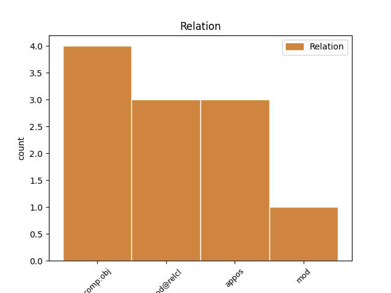
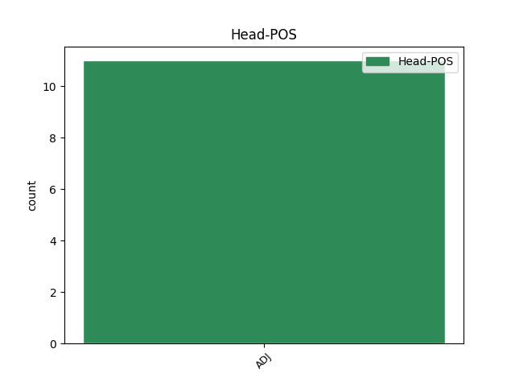
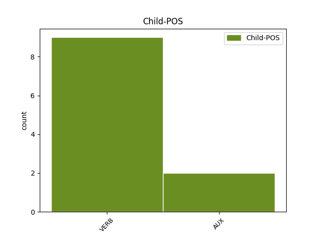

Distribution of features within this leaf



Agreement Rules sorted by frequency.
- When the dependent token is the direct object complements(comp:obj) of the head token, and the head token is ADJ and the dependent token is VERB.
1 Vi _ _ _ _ 0 _ _ _
2 varierar _ _ _ _ 0 _ _ _
3 i _ _ _ _ 0 _ _ _
4 vårt _ _ _ _ 0 _ _ _
5 beteende _ _ _ _ 0 _ _ _
6 från _ _ _ _ 0 _ _ _
7 situation _ _ _ _ 0 _ _ _
8 till _ _ _ _ 0 _ _ _
9 situation _ _ _ _ 0 _ _ _
10 beroende beroende ADJ PC|PRS|UTR/NEU|SIN/PLU|IND/DEF|NOM Case=Nom|Tense=Pres|VerbForm=Part 0 _ _ _
11 på _ _ _ _ 0 _ _ _
12 vilka _ _ _ _ 0 _ _ _
13 andra _ _ _ _ 0 _ _ _
14 människor _ _ _ _ 0 _ _ _
15 som _ _ _ _ 0 _ _ _
16 finns finnas VERB VB|PRS|SFO Mood=Ind|Tense=Pres|VerbForm=Fin 10 comp:obj _ _
17 med _ _ _ _ 0 _ _ _
18 . _ _ _ _ 0 _ _ _
1 Till _ _ _ _ 0 _ _ _
2 detta _ _ _ _ 0 _ _ _
3 kommer _ _ _ _ 0 _ _ _
4 de _ _ _ _ 0 _ _ _
5 dödade _ _ _ _ 0 _ _ _
6 och _ _ _ _ 0 _ _ _
7 skadade skada ADJ PC|PRF|UTR/NEU|PLU|IND/DEF|NOM Case=Nom|Number=Plur|Tense=Past|VerbForm=Part 0 _ _ _
8 som _ _ _ _ 0 _ _ _
9 inte _ _ _ _ 0 _ _ _
10 själva _ _ _ _ 0 _ _ _
11 åkte åka VERB VB|PRT|AKT Mood=Ind|Tense=Past|VerbForm=Fin|Voice=Act 7 mod@relcl _ _
12 bil _ _ _ _ 0 _ _ _
13 - _ _ _ _ 0 _ _ _
14 fotgängare _ _ _ _ 0 _ _ _
15 och _ _ _ _ 0 _ _ _
16 cyklister _ _ _ _ 0 _ _ _
17 . _ _ _ _ 0 _ _ _
Disagree Examples:
1 Vissa _ _ _ _ 0 _ _ _
2 kommuner _ _ _ _ 0 _ _ _
3 ger _ _ _ _ 0 _ _ _
4 ett _ _ _ _ 0 _ _ _
5 speciellt _ _ _ _ 0 _ _ _
6 bostadstillägg _ _ _ _ 0 _ _ _
7 till _ _ _ _ 0 _ _ _
8 handikappade handikappad ADJ PC|PRF|UTR/NEU|PLU|IND/DEF|NOM Case=Nom|Number=Plur|Tense=Past|VerbForm=Part 0 _ _ _
9 som _ _ _ _ 0 _ _ _
10 bor bo VERB VB|PRS|AKT Mood=Ind|Tense=Pres|VerbForm=Fin|Voice=Act 8 mod@relcl _ _
11 i _ _ _ _ 0 _ _ _
12 invalidbostäder _ _ _ _ 0 _ _ _
13 eller _ _ _ _ 0 _ _ _
14 i _ _ _ _ 0 _ _ _
15 andra _ _ _ _ 0 _ _ _
16 lämpligt _ _ _ _ 0 _ _ _
17 utrustade _ _ _ _ 0 _ _ _
18 bostäder _ _ _ _ 0 _ _ _
19 . _ _ _ _ 0 _ _ _
1 KPI _ _ _ _ 0 _ _ _
2 är _ _ _ _ 0 _ _ _
3 konstruerad konstruerad ADJ PC|PRF|UTR|SIN|IND|NOM Case=Nom|Definite=Ind|Gender=Com|Number=Sing|Tense=Past|VerbForm=Part 0 _ _ _
4 som _ _ _ _ 0 _ _ _
5 en _ _ _ _ 0 _ _ _
6 kedjeindex _ _ _ _ 0 _ _ _
7 med _ _ _ _ 0 _ _ _
8 årslänkar _ _ _ _ 0 _ _ _
9 vilket _ _ _ _ 0 _ _ _
10 innebär innebära VERB VB|PRS|AKT Mood=Ind|Tense=Pres|VerbForm=Fin|Voice=Act 3 appos _ _
11 att _ _ _ _ 0 _ _ _
12 man _ _ _ _ 0 _ _ _
13 kan _ _ _ _ 0 _ _ _
14 jämföra _ _ _ _ 0 _ _ _
15 prisutvecklingen _ _ _ _ 0 _ _ _
16 år _ _ _ _ 0 _ _ _
17 från _ _ _ _ 0 _ _ _
18 år _ _ _ _ 0 _ _ _
19 . _ _ _ _ 0 _ _ _
1 Skyddad _ _ _ _ 0 _ _ _
2 och _ _ _ _ 0 _ _ _
3 halvskyddad _ _ _ _ 0 _ _ _
4 sysselsättning _ _ _ _ 0 _ _ _
5 ger _ _ _ _ 0 _ _ _
6 handikappade handikappad ADJ PC|PRF|UTR/NEU|PLU|IND/DEF|NOM Case=Nom|Number=Plur|Tense=Past|VerbForm=Part 0 _ _ _
7 , _ _ _ _ 0 _ _ _
8 som _ _ _ _ 0 _ _ _
9 av _ _ _ _ 0 _ _ _
10 olika _ _ _ _ 0 _ _ _
11 skäl _ _ _ _ 0 _ _ _
12 inte _ _ _ _ 0 _ _ _
13 kan kunna AUX VB|PRS|AKT Mood=Ind|Tense=Pres|VerbForm=Fin|Voice=Act 6 mod@relcl _ _
14 få _ _ _ _ 0 _ _ _
15 arbete _ _ _ _ 0 _ _ _
16 på _ _ _ _ 0 _ _ _
17 den _ _ _ _ 0 _ _ _
18 öppna _ _ _ _ 0 _ _ _
19 marknaden _ _ _ _ 0 _ _ _
20 , _ _ _ _ 0 _ _ _
21 möjligheter _ _ _ _ 0 _ _ _
22 till _ _ _ _ 0 _ _ _
23 en _ _ _ _ 0 _ _ _
24 arbetsinsats _ _ _ _ 0 _ _ _
25 . _ _ _ _ 0 _ _ _
1 EEC:s _ _ _ _ 0 _ _ _
2 gemensamma _ _ _ _ 0 _ _ _
3 jordbrukspolitik _ _ _ _ 0 _ _ _
4 kommer _ _ _ _ 0 _ _ _
5 år _ _ _ _ 0 _ _ _
6 1975 _ _ _ _ 0 _ _ _
7 att _ _ _ _ 0 _ _ _
8 kosta _ _ _ _ 0 _ _ _
9 cirka _ _ _ _ 0 _ _ _
10 20 _ _ _ _ 0 _ _ _
11 miljarder _ _ _ _ 0 _ _ _
12 kronor _ _ _ _ 0 _ _ _
13 ( _ _ _ _ 0 _ _ _
14 för _ _ _ _ 0 _ _ _
15 högt _ _ _ _ 0 _ _ _
16 räknat räkna ADJ PC|PRF|NEU|SIN|IND|NOM Case=Nom|Definite=Ind|Gender=Neut|Number=Sing|Tense=Past|VerbForm=Part 0 _ _ _
17 anser anse VERB VB|PRS|AKT Mood=Ind|Tense=Pres|VerbForm=Fin|Voice=Act 16 mod _ _
18 dock _ _ _ _ 0 _ _ _
19 en _ _ _ _ 0 _ _ _
20 del _ _ _ _ 0 _ _ _
21 ) _ _ _ _ 0 _ _ _
22 . _ _ _ _ 0 _ _ _
1 Fördelen _ _ _ _ 0 _ _ _
2 med _ _ _ _ 0 _ _ _
3 systemet _ _ _ _ 0 _ _ _
4 är _ _ _ _ 0 _ _ _
5 vidare _ _ _ _ 0 _ _ _
6 att _ _ _ _ 0 _ _ _
7 det _ _ _ _ 0 _ _ _
8 inte _ _ _ _ 0 _ _ _
9 behöver _ _ _ _ 0 _ _ _
10 vara _ _ _ _ 0 _ _ _
11 anslutet ansluta ADJ PC|PRF|NEU|SIN|IND|NOM Case=Nom|Definite=Ind|Gender=Neut|Number=Sing|Tense=Past|VerbForm=Part 0 _ _ _
12 till _ _ _ _ 0 _ _ _
13 vattennätet _ _ _ _ 0 _ _ _
14 vilket _ _ _ _ 0 _ _ _
15 ofta _ _ _ _ 0 _ _ _
16 kan kunna AUX VB|PRS|AKT Mood=Ind|Tense=Pres|VerbForm=Fin|Voice=Act 11 appos _ _
17 vara _ _ _ _ 0 _ _ _
18 fallet _ _ _ _ 0 _ _ _
19 på _ _ _ _ 0 _ _ _
20 avsides _ _ _ _ 0 _ _ _
21 belägna _ _ _ _ 0 _ _ _
22 klubbar _ _ _ _ 0 _ _ _
23 . _ _ _ _ 0 _ _ _